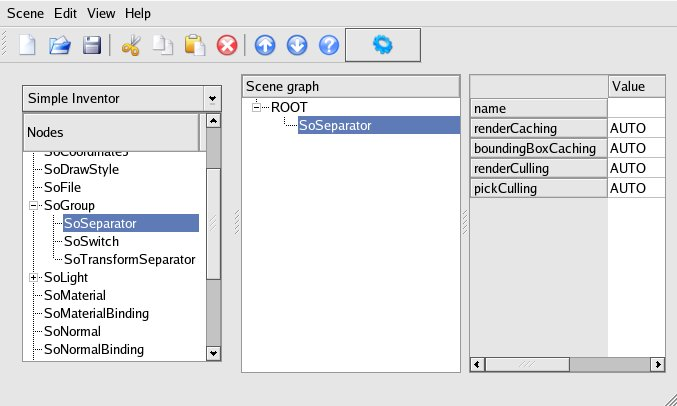
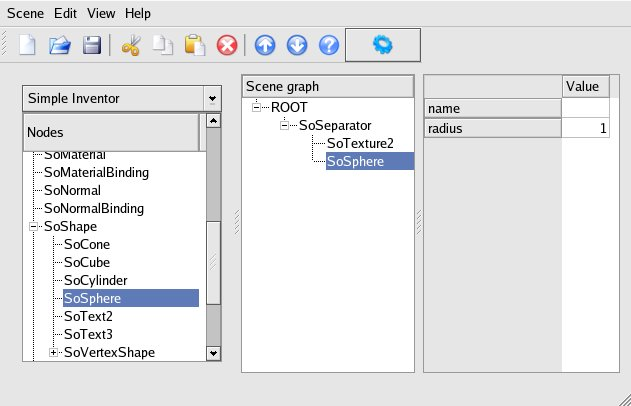
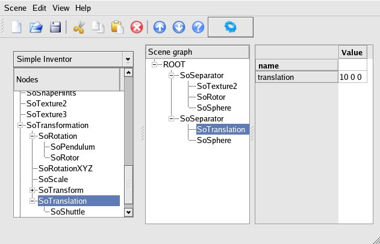
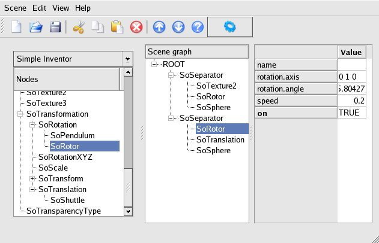

- Começaremos abrindo a aplicação e criando
um Separator para o planeta
Terra.

- Adicionaremos um nodo Texture2 e chamaremos o arquivo earth.jpg. Nós então adicionaremos
um nodo Sphere então podemos
modelar o planeta Terra.

- Agora vamos fazer nosso planeta rotacionar.
Para fazer isso adicionamos um nodo Rotor, colocando esse nodo acima do
nodo Sphere. Editaremos os
valores de rotação como mostrado na figura para ratação em torno do
eixo, ajustando a velocidade de rotação para 0.5.

- Terminamos a modelagem da Terra. Agora
iremos modelar a lua, adicionando um novo nodo Separator, com uma Sphere, para o nodo ROOT como
mostrado. Editaremos o raio da esfera de forma que ele seja menor que o
da Terra, 0.2 por exemplo.

- Não podemos ver nova nova esfera? Sem
problema. Ela ainda está dentro de nosso planeta Terra. Para colocá-la
no lugar apropriado, adicionaremos um nodo Translation , deslocando ela 10
unidades sobre o eixo X. Agora clique sobe o ícone 'olho' (veja o passo
7 para localizar o ícone, no lado direito da janela) para que a câmera
se posicione de forma que seja possível ver toda a cena.

- Agora faremos com que a lua ande em torno
da Terra. Para fazer isso, inseriremos um nodo Rotor antes do nodo Translation e ajustaremos a
velocidade de rotação, como no passo 3. (Não precisamos inserir um nodo
Rotor para
fazer a lua girar uma vez que ela sempre mostra mesma face para a
Terra.)

- Aqui está o resultado que teremos, com a
Terra e a lua girando automaticamente.

|